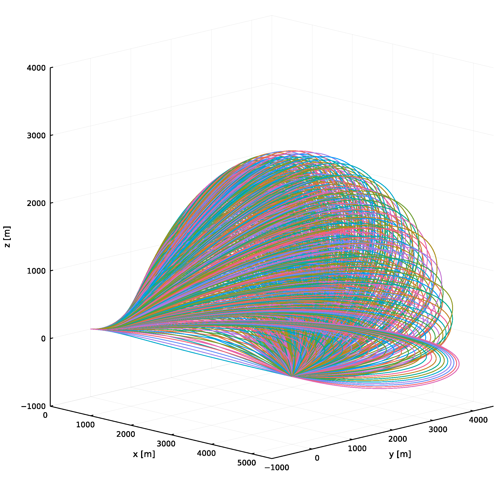

Multimedia
Links
Convex Regularised Recursive Least Squares for Online Identification of Physically Feasible Inertial Parameters
Presentation Video: https://www.youtube.com/watch?v=Da3xsBzzvsA
Simulation Video: https://www.youtube.com/watch?v=B8_UyqWOrFA
Three-Dimensional Vector-Form Biased Proportional Navigation Guidance Law for Control of Arrival Direction
Achievable Impact Direction Coverage Simulation:

Constant Speed Standoff Tracking of Manoeuvring Ground Target
Simulation Video: https://www.youtube.com/watch?v=8JLJ6LqUgw0
Three-Dimensional Nonlinear Differential Geometric Path-Following Guidance Law
Simulation Video (Look-Ahead Vector Pursuit): https://www.youtube.com/watch?v=eQfHfCV2u98
Simulation Video (Compilation): https://www.youtube.com/watch?v=LU8WUJhQLxM
Notable impact: Applied with extension to autonomous flight in strong windfield
Luca Furieri, Thomas Stastny, Lorenzo Marconi, Roland Siegwart, and Igor Gilitschenski, “Gone with the Wind: Nonlinear Guidance for Small Fixed-Wing Aircrafts in Arbitrarily Strong Windfields,” American Control Conference, Seattle, WA, USA, May 2017.
DOI:10.23919/ACC.2017.7963609, Extended Version, Awarded the O. Hugo Shuck Best Paper Award
Decentralised Control System of Multiple Fixed-Wing UAVs
Annotated Experiment Video: https://www.youtube.com/watch?v=oyfM2HBnTaQ
Flight Data Visualisation: https://www.youtube.com/watch?v=a-xaNMRWMGA
Photo:

Offline Planning and Online Modification of Waypoints Considering Wind for Unpowered Aircraft
Simulation Video without Wind: https://www.youtube.com/watch?v=nhWPsPoZfmo
Simulation Video with Wind: https://www.youtube.com/watch?v=YWDJcMGLGKU
Model-Based Design (Automatic Code Generation) for Development of Spacecraft Guidance, Navigation, and Control Software
Processor-In-the-Loop Simulation Video: https://www.youtube.com/watch?v=mhLymPfTJuc
Photo:

Development of Integrated Anti-Ship Missile and Ship Defence System Simulator
Simulator Demonstration Video: https://www.youtube.com/watch?v=eEHWkeCBlwU